Sí , hay muchos equipos de ésos pequeñitos.
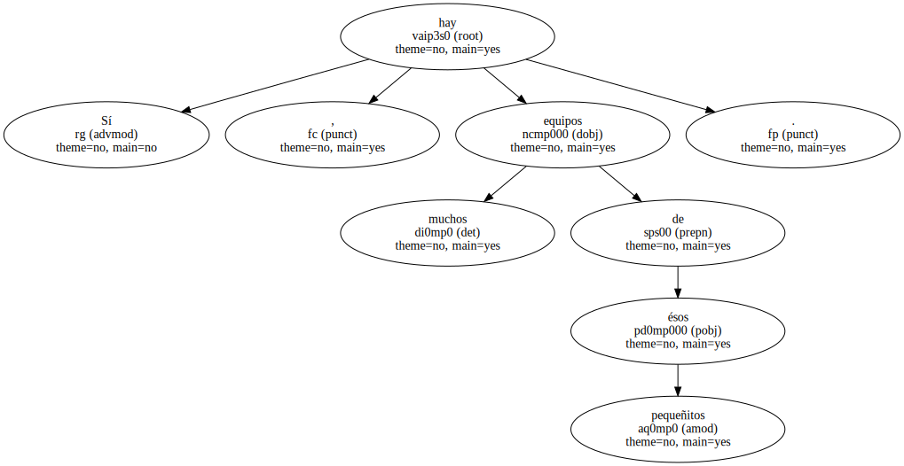Pero nadie los confundirá con el Real Madrid.
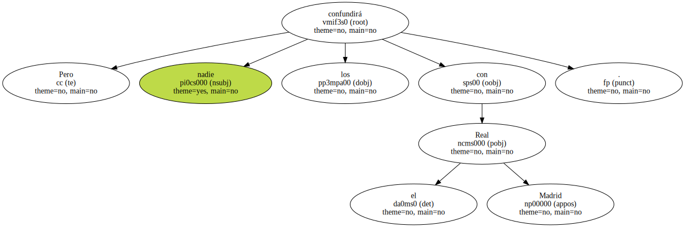Ayer murió el séptimo proyecto y nació el octavo.
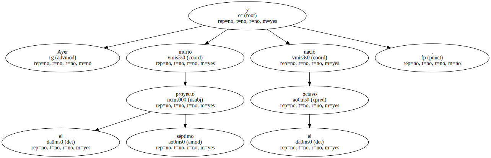Bebé prematuro.
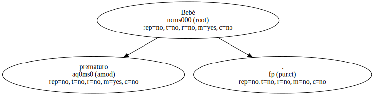Ni siquiera ha llegado a sietemesino.
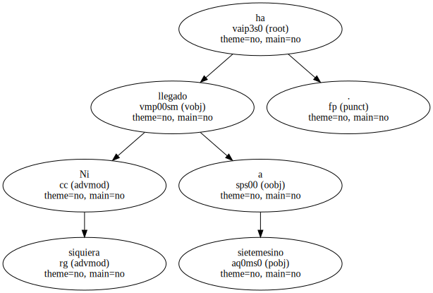Ya en enero se ha acabado todo , y todo vuelve a empezar , en ese ciclo ininterrumpido de la - era Gil -.
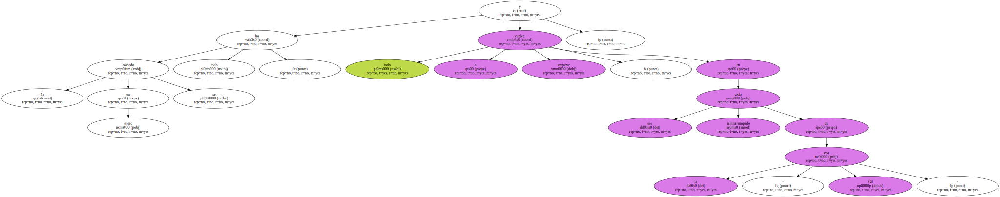Adiós , Copa de la UEFA.

Adiós , Liga.
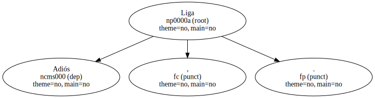Adiós , Copa del Rey.
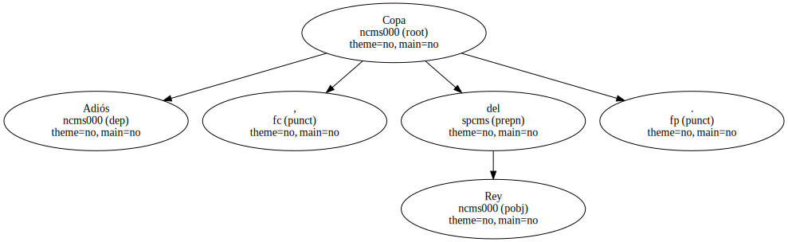Hasta el año que viene.
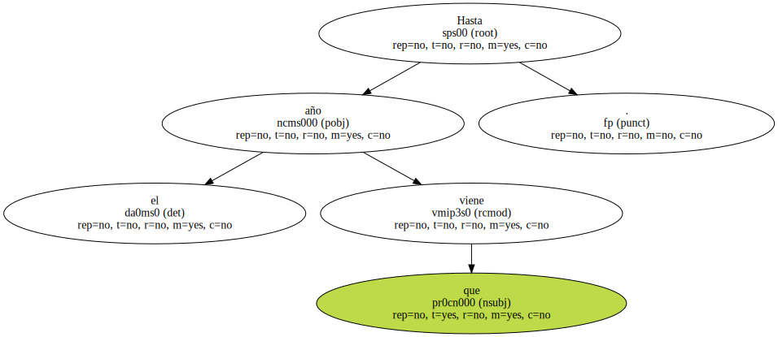Siempre hasta la temporada que viene mientras ésta todavía no ha alcanzado su ecuador.
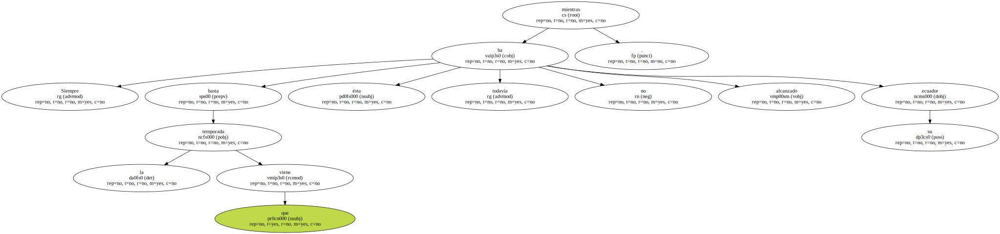El Atleti , en su viaje a ninguna parte , sigue inmerso en su eterno retorno.
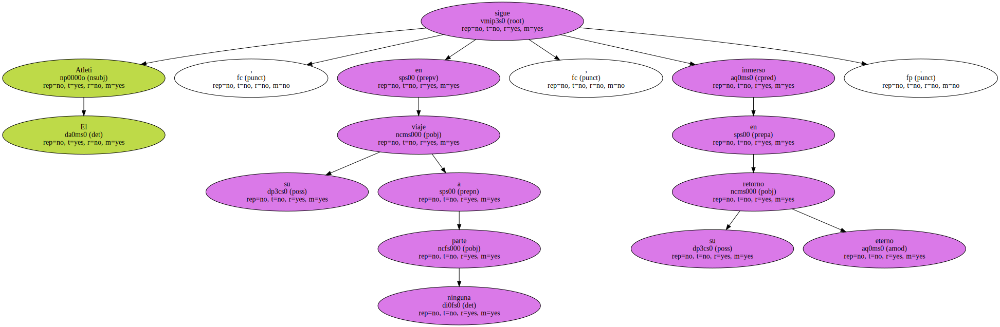- Qué pueden pensar sus aficionados.
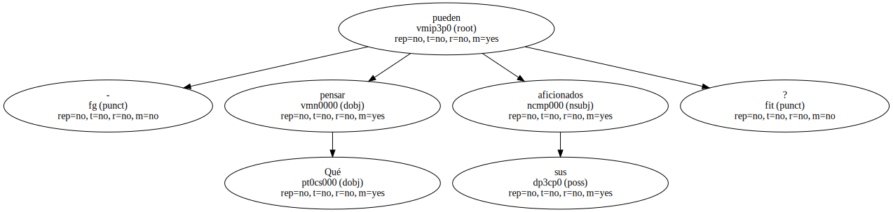- A qué pueden agarrarse.
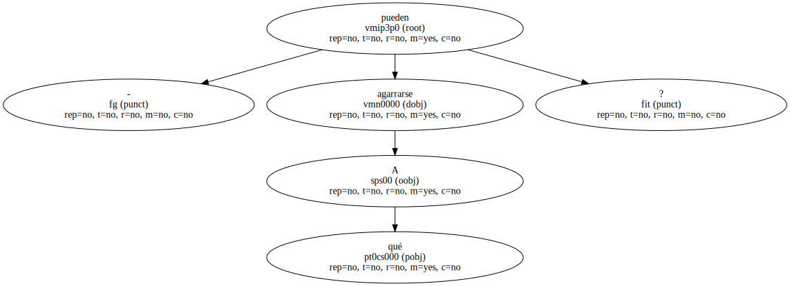- Qué esperanza les cabe.
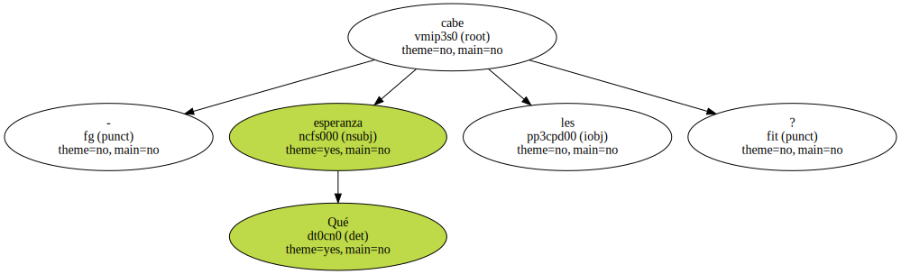Son como esos campesinos de Chiapas que , secularmente desheredados , ya no creen en la modificación del sistema , aunque , en su desesperación , se vean obligados a combatirlo con las armas.
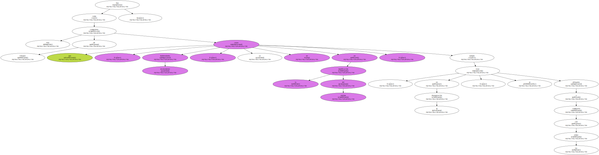El Atleti fue zapatista en el Bernabéu y no consiguió acabar con ese poder oficialista que todavía es el Real Madrid de las arcas vacías y la caja de Pandora llena.
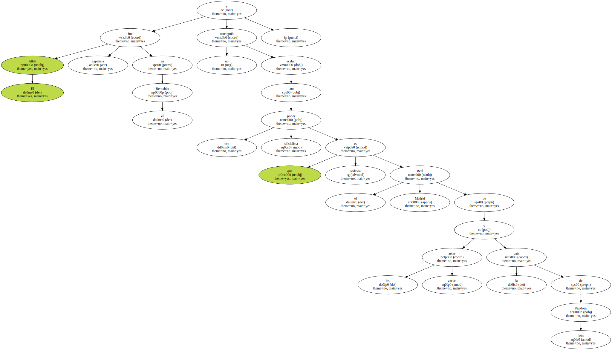